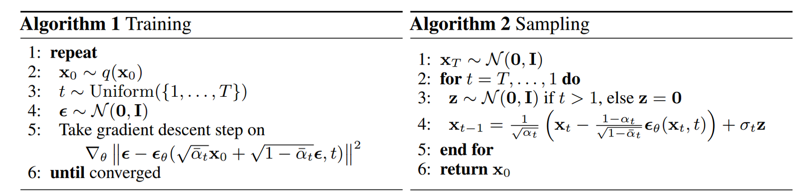
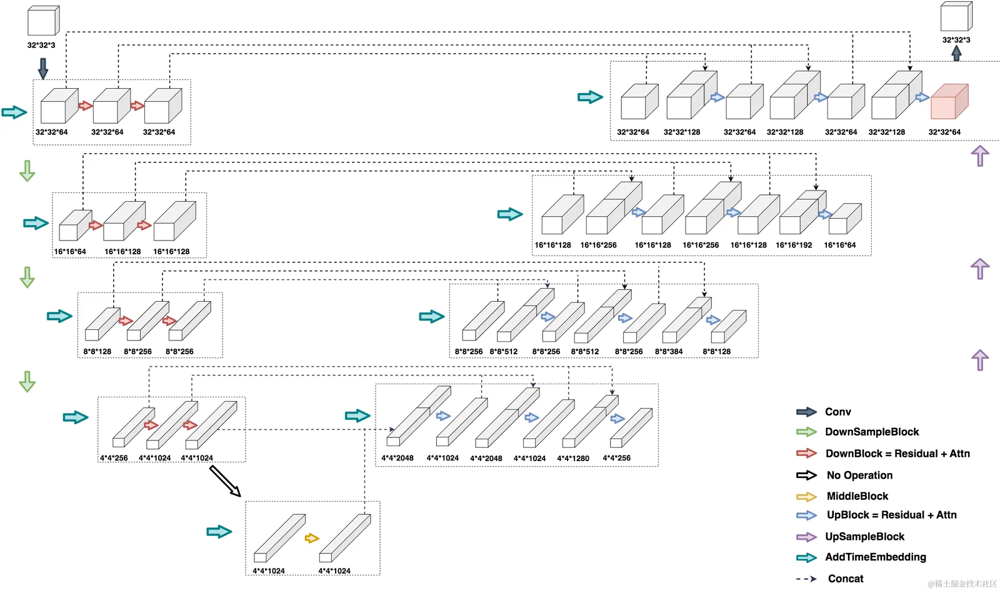
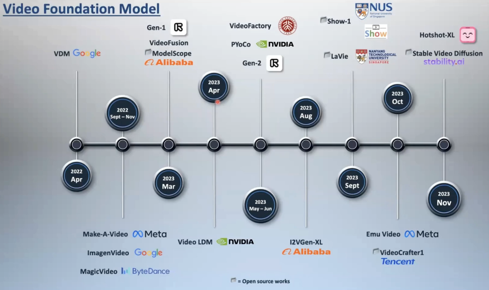

diffusion
diffusion
好文推荐
DALL·E 2（内含扩散模型介绍）【论文精读】_哔哩哔哩_bilibili
huggingface🤗课程：
原版
GitHub - huggingface/diffusion-models-class: Materials for the Hugging Face Diffusion Models Course
中文翻译
ddpm
diffusion模型奠基作 Denoising Diffusion Probabilistic Models(DDPM)
Denoising Diffusion Probabilistic Models
代码 GitHub - hojonathanho/diffusion: Denoising Diffusion Probabilistic Models
diffusion入门教程、数学推导：推荐阅读下面的这篇文章：
https://zhuanlan.zhihu.com/p/563661713
理解加噪去噪过程及数学原理：
简单基础入门理解Denoising Diffusion Probabilistic Model，DDPM扩散模型-CSDN博客
理解模型Unet设计
https://zhuanlan.zhihu.com/p/637815071
训练与采样过程：

Unet架构：

代码实操：
deeplearning.ai的diffusion在线课程 How Diffusion Models Work - DeepLearning.AI
如何从deeplearning.ai的jupyter批量下载文件？
1 | |
完成打包后下载即可
ddim
Denoising Diffusion Implicit Models
推荐阅读：
diffusion加速
参考hugging face: Effective and efficient diffusion
- DeepCache
- 更换scheduler，比如DPMSolverMultistepScheduler
示例代码：
1 | |
- 使用torch.float16加速
1 | |
latent diffusion
High-Resolution Image Synthesis with Latent Diffusion Models
代码仓库
https://github.com/compvis/latent-diffusion
讲解，但是你不一定能看得懂 https://zhuanlan.zhihu.com/p/582693939
推荐教程：
【【渣渣讲课】试图做一个正常讲解Latent / Stable Diffusion的成年人】 【渣渣讲课】试图做一个正常讲解Latent / Stable Diffusion的成年人_哔哩哔哩_bilibili
渣渣讲课的笔记 【AI绘图学习笔记】Latent Diffusion Model（上）——论文解读_latent diffusion models-CSDN博客
推荐阅读：
论文中文翻译 https://www.jianshu.com/p/816c60d981b1
渣渣学姐的 latent diffusion 在手写数字上的实现https://juejin.cn/post/7371995232160268288
github仓库
https://github.com/guchengzhong/latent_diffusion_model_mnist
尝试在本地训练出生成手写数字的模型，并读懂相关代码
如果你不知道什么是VAE，请先阅读对VAE的介绍，步子迈太大会扯着蛋
你也可以观看这个视频https://www.youtube.com/watch?v=ZBKpAp_6TGI&t=4745s，从零开始使用pytorch实现stable diffusion
controlnet
Adding Conditional Control to Text-to-Image Diffusion Models
GitHub - lllyasviel/ControlNet: Let us control diffusion models
学会调库
参见hugging face difffusers
HCP-diffusion: Diffusion工具箱
GitHub - IrisRainbowNeko/HCP-Diffusion: A universal Stable-Diffusion toolbox
视频生成
【【中文】视频扩散模型，三小时入门到精通，Mike Shou, Video Diffusion Models, 2023】
【中文】视频扩散模型，三小时入门到精通，Mike Shou, Video Diffusion Models, 2023_哔哩哔哩_bilibili

stable video diffusion
Stable Video Diffusion (SVD)可以从图片生成短视频
不支持文本控制
论文
Stable Video Diffusion: Scaling Latent Video Diffusion Models to Large Datasets
【Stable Video Diffusion论文】视频生成SD，Stability AI又一开源力作_哔哩哔哩_bilibili
GitHub - Stability-AI/generative-models: Generative Models by Stability AI
帧间连续性
在使用 Stable Video Diffusion（SVD）或其他类似的视频生成模型时，帧之间的连续性是一个关键问题。为了保证生成的视频帧之间具有平滑的过渡和一致性，通常会采用以下几种技术和方法：
- 时间一致性约束
-
时间嵌入（Temporal Embedding）：在 SVD 中，每一帧的时间信息会被显式地编码为时间嵌入向量。这些嵌入向量被输入到模型中，使得模型能够感知帧与帧之间的时间关系，从而生成具有时间连续性的内容。
-
时间注意力机制（Temporal Attention）：通过引入跨帧的注意力机制，模型可以在生成某一帧时参考前一帧或后一帧的信息，从而确保帧间的一致性。
- 帧间条件生成
-
条件扩散（Conditional Diffusion）：在生成当前帧时，模型可以以前一帧作为条件输入。这样，当前帧的生成过程会受到前一帧的影响，从而保持视觉上的一致性。
-
双向扩散（Bidirectional Diffusion）：除了从前向后生成帧外，还可以从后向前生成帧，并结合两者的输出进行融合，进一步提升帧间连续性。
- 光流估计与运动建模
-
光流引导（Optical Flow Guidance）：通过计算相邻帧之间的光流场，模型可以学习物体在帧间的运动轨迹，从而生成更加连贯的动态效果。
-
运动先验（Motion Prior）：引入预训练的运动模型（如基于物理的运动模拟或深度学习的运动预测模型），帮助生成更自然的运动。
- 帧间正则化
-
帧差损失（Frame Difference Loss）：在训练过程中，加入帧间差异的损失函数，鼓励相邻帧之间的像素变化尽可能小，从而减少闪烁或不连续的现象。
-
一致性损失（Consistency Loss）：通过约束相邻帧在特征空间中的相似性，确保生成的帧在语义和外观上具有一致性。
- 多尺度生成与融合
-
多分辨率生成（Multi-Resolution Generation）：在不同分辨率下生成帧，然后逐步融合，以确保低频信息（如背景）和高频信息（如细节）都能保持连续性。
-
金字塔结构（Pyramid Structure）：采用金字塔式的生成方式，先生成粗略的帧序列，再逐步细化，从而避免帧间跳跃。
- 后处理技术
-
帧插值（Frame Interpolation）：在生成的帧之间插入额外的中间帧，利用插值算法（如基于光流的插值）来增强连续性。
-
去噪与平滑（Denoising and Smoothing）：对生成的视频进行后处理，例如应用高斯模糊或时间域滤波，以减少帧间的突变。
- 数据增强与训练策略
-
时间对齐数据增强（Temporal Alignment Augmentation）：在训练数据中引入时间对齐的增强操作，例如随机裁剪、缩放或旋转，使模型学会处理帧间变化。
-
长序列训练（Long Sequence Training）：使用较长的视频片段进行训练，让模型更好地捕捉长时间依赖关系。
- 用户交互与控制
-
关键帧引导（Keyframe Guidance）：允许用户指定某些关键帧，模型根据这些关键帧生成中间帧，从而确保重要的场景转换是平滑的。
-
运动轨迹编辑（Motion Trajectory Editing）：提供工具让用户调整物体的运动轨迹，从而间接控制帧间连续性。
通过以上方法的组合，Stable Video Diffusion 能够在生成高质量视频的同时，有效保证帧之间的连续性和一致性。具体实现时，这些技术可能会根据应用场景和需求进行定制和优化。
diffusers支持视频生成
CogVideoX
text and image to video generation
CogVideoX: Text-to-Video Diffusion Models with An Expert Transformer
diffusers库提供的cogvideo https://github.com/huggingface/diffusers/tree/main/examples/cogvideo
CogVideoX提供的LoRA微调
dreambooth
DreamBooth 用于微调预训练的文本到图像生成模型（如 Stable Diffusion）。它的核心目标是通过少量的自定义图像输入，让模型学会生成特定对象或主题的高质量图像，同时保留原始模型的泛化能力。
[论文简析]DreamBooth: Fine Tuning Text-to-Image Diffusion Models…[2208.12242]_哔哩哔哩_bilibili
阅读huggingface提供的dreambooth教程https://huggingface.co/docs/diffusers/training/dreambooth，微调stable-diffusion-v1-4模型，教模型如何生成"sks dog"
LoRA
LoRA用于提高大规模预训练模型微调的效率，同时减少计算资源和存储开销。
LoRA: Low-Rank Adaptation of Large Language Models
LoRA 是一种通过低秩矩阵逼近来实现高效微调的方法。它的基本思想是将原始模型的权重矩阵分解成两个低秩矩阵，这样可以在微调时只更新这些低秩矩阵，从而避免对整个预训练模型进行全面更新。LoRA的优点在于，微调时只增加了少量的参数，从而减少了计算量和存储需求。
假设模型的权重矩阵为 W，LoRA 将其分解为两个较小的矩阵 A 和 B，其中 A 的维度为 d×r，B 的维度为 r×k。这里 r 是一个远小于 d 和 k 的秩（rank），因此 A 和 B 的参数量远远少于原始矩阵 W。
其中，A 和 B 是低秩矩阵，它们在微调过程中被更新，而原始的权重矩阵 W 不需要更新。
快速简单理解：
[论文速览]LoRA: Low-Rank Adaptation of Large Language Models[2106.09685]哔哩哔哩bilibili
深入理解：
深入浅出完整解析LoRA(Low-Rank Adaptation)模型核心基础知识
https://hcpdiff.readthedocs.io/zh-cn/latest/tutorial/lora_anime.html
其他
DiffusionDet目标检测
目标检测DiffusionDet: Diffusion Model for Object Detection-CSDN博客
使用预训练模型运行DiffusionDetection_diffusion detection-CSDN博客
Diffusion-LM文本生成
论文https://arxiv.org/abs/2205.14217
IP-adapter:使预训练的text-to-image diffusion model能够根据image prompt生成图像
IP-Adapter: Text Compatible Image Prompt Adapter for Text-to-Image Diffusion Models